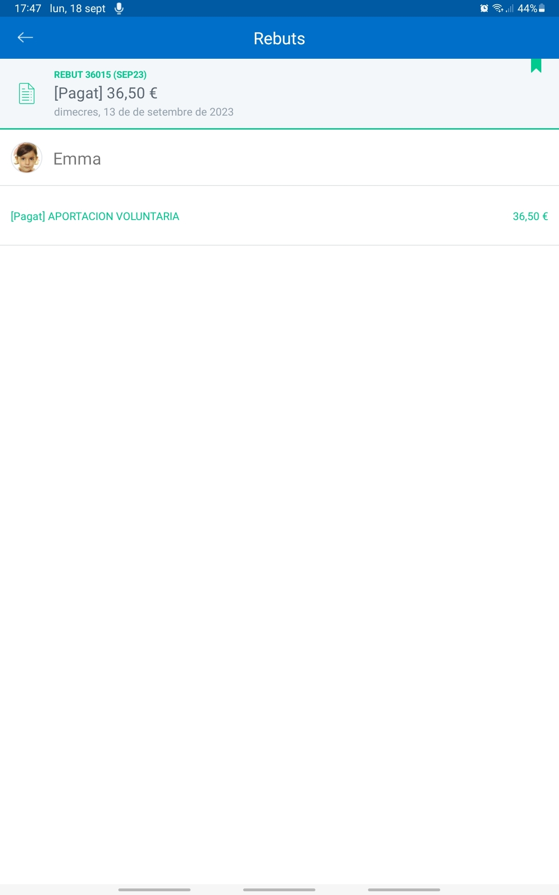

No estoy de acuerdo con el cambio de metodología ABP en curso 2023-2024. Crea nuevos conflictos y segregaciones, basada en la popularidad y banalización del conocimiento.
Este año solo está el libro de logico matemáticas.
Pagamos por el libro y también por el proyecto que elabora el profesor. 40€. Es decir, ha habido una subida de nuevo.
Con posibilidad de que se pida más por ser una estimación inmaterial.
No pensamiento crítico cuando la base es religiosa y se adoctrinan en dogmas de fe que no se pueden criticar por su prooia naturaleza.
Discriminacion de sexo, ver fotos: en donde rarísima vez son mixtas.
Subidas:
Plataforma de 19€ a 25€
Aportación voluntaria* a 36,5€
Plataforma digital a 27€?
Comedor 109 y 140€
Material infantil ?> Tarea educativa a 59.78€
*Pero las incluye en las demandas y la jueza da por obligadas (porque al no tener abogada no se actuó en ningún aspecto durante la demanda):
